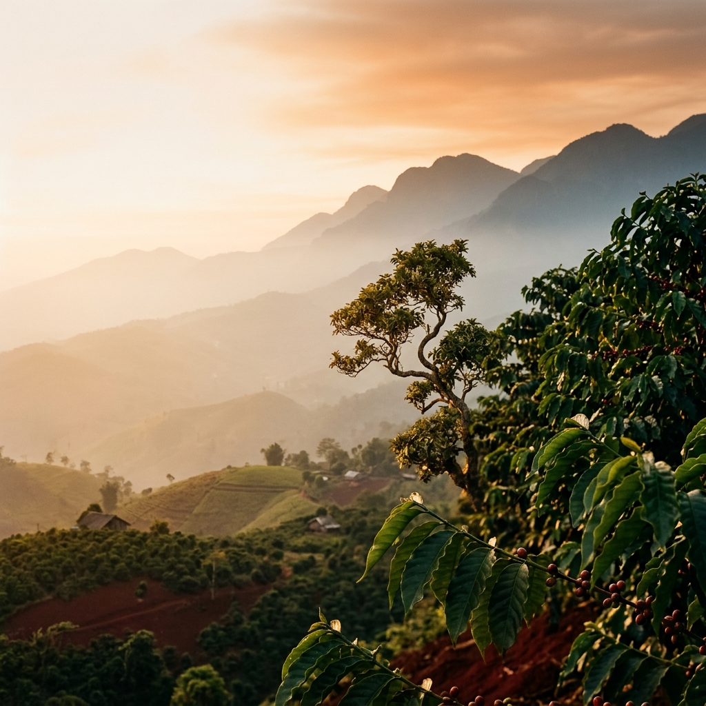
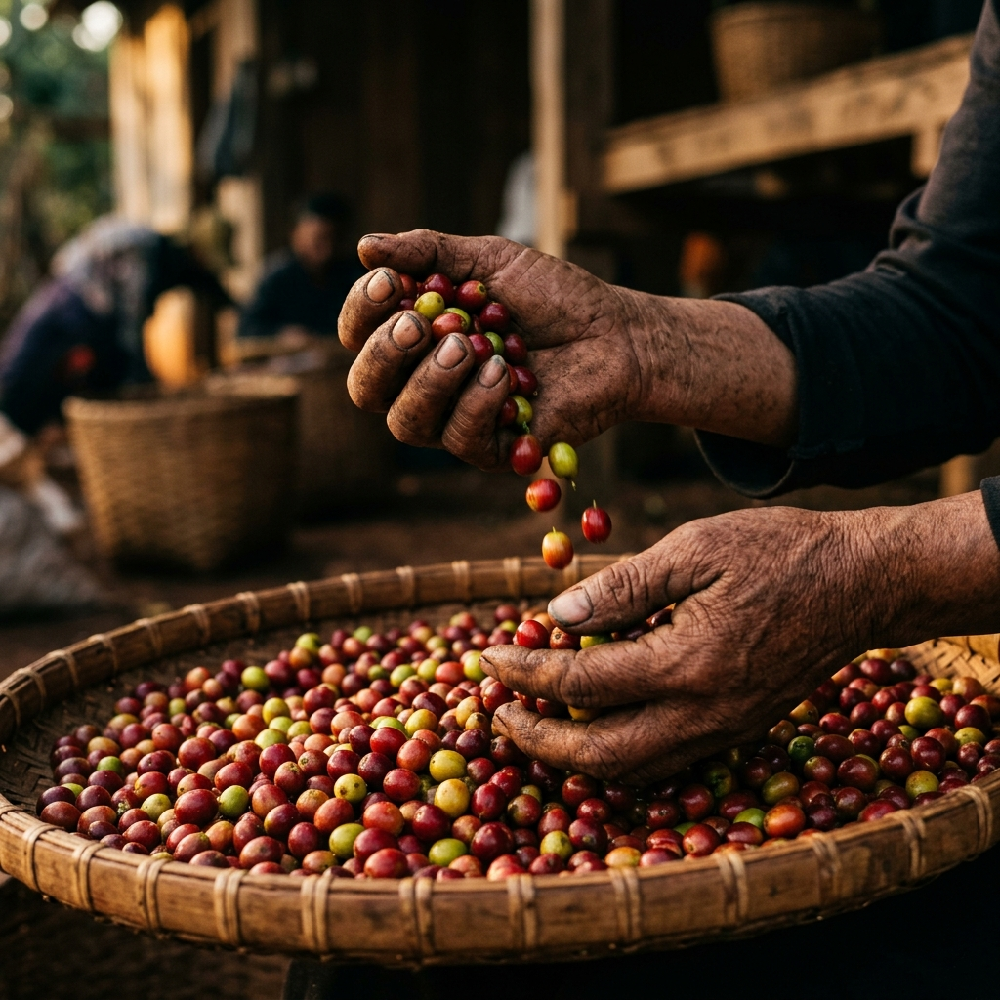
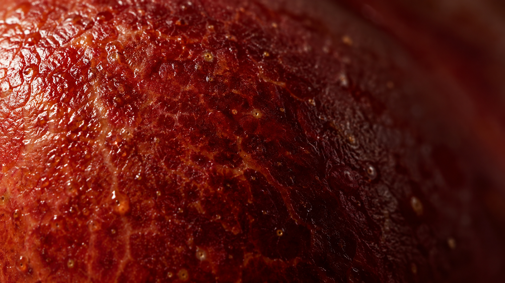
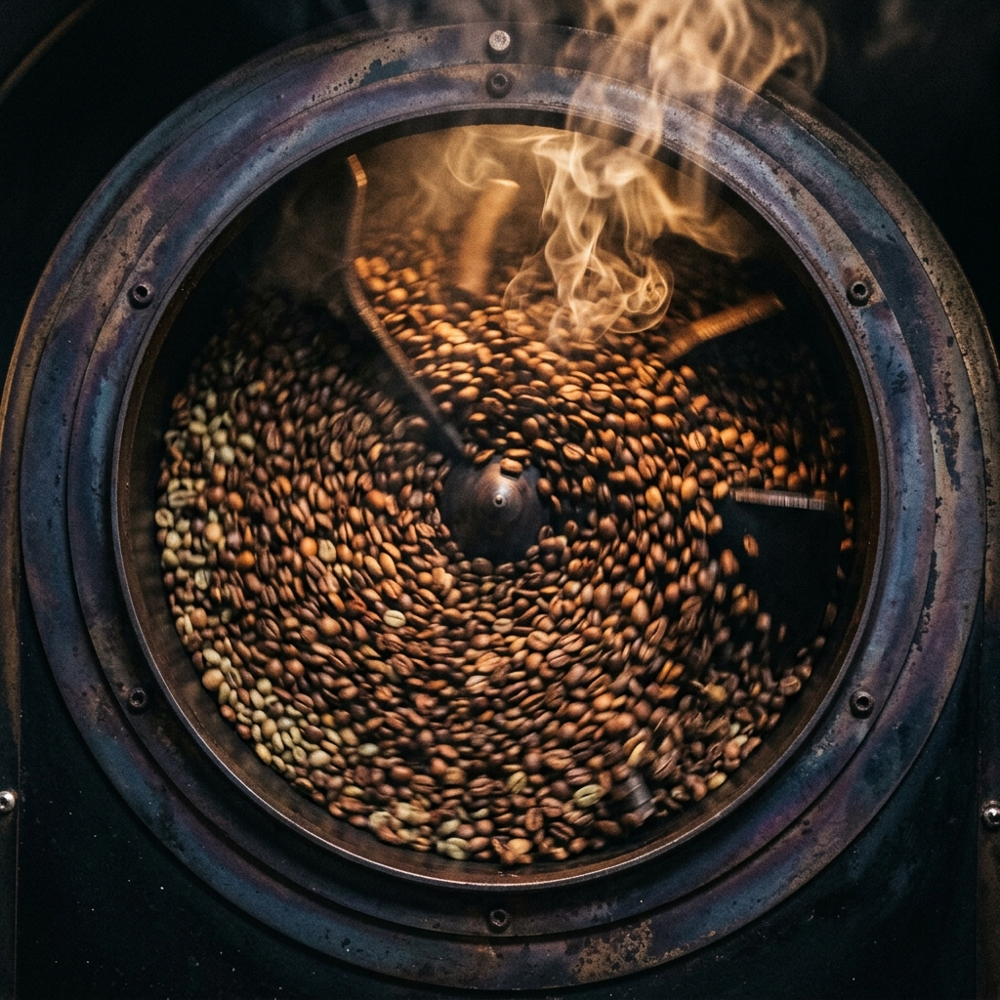
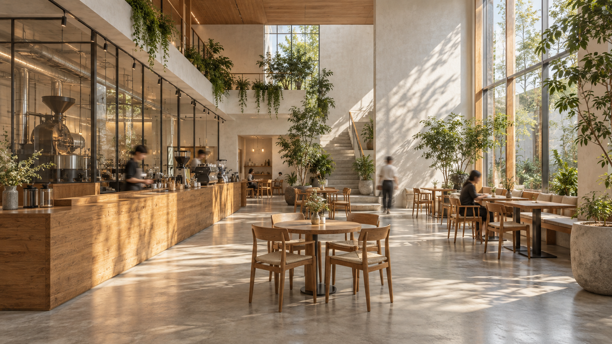
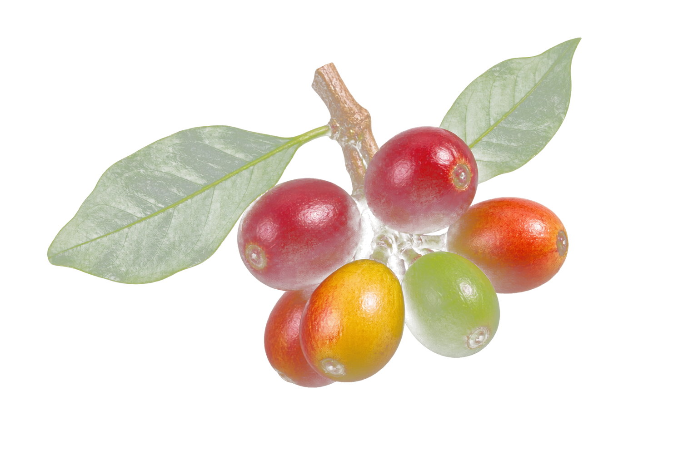
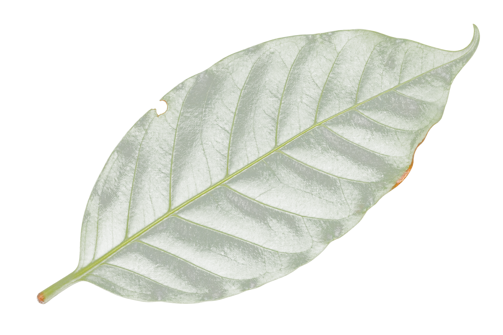
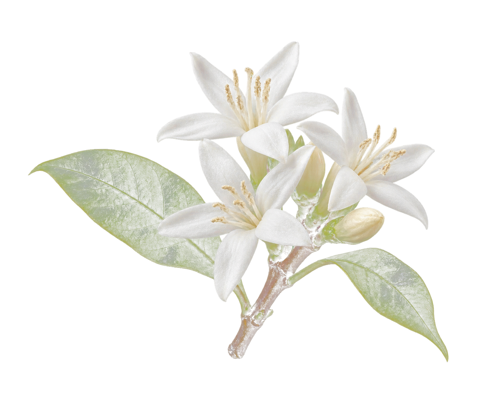
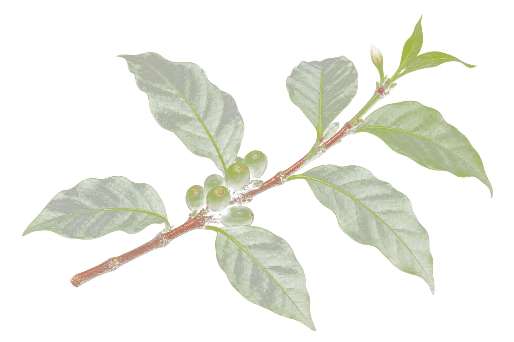
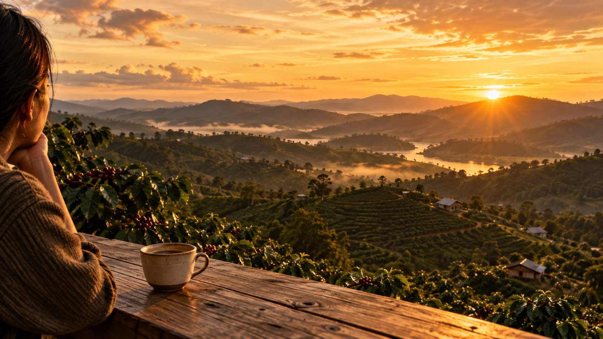

EVERY HALF — COFFEE & COMMUNITY
Tìm một khoảng dừng
cho riêng bạn.
Cà phê hạt đặc sản Việt Nam — từ vùng nguyên liệu chọn lọc đến tách cà phê của bạn.
Khám phá các dòng cà phê hạt đặc sản của Every Half, tìm hiểu hương vị và lựa chọn phù hợp với cách thưởng thức của bạn.
Được công nhận tại Global Coffee Awards
Xem các dòng cà phê và thông tin mua hàng trên website Every Half
Cà phê hạt đặc sản
Khám phá cà phê hạt đặc sản
Hai dòng cà phê hạt đặc sản của Every Half từng được vinh danh. Chọn dòng bạn quan tâm để xem thông tin chi tiết và mua hàng trên website Every Half.
-
Fine Robusta Cư M’gar
- Hạng mục: Filter / Robusta
- Gold – Global Coffee Awards Origin 2025
Giá niêm yết200.000 VNĐ
Xem chi tiết -
Liberica M’Drak
- Hạng mục: Filter / Liberica
- Gold – Global Coffee Awards Asia 2026
Giá niêm yết250.000 VNĐ
Xem chi tiết
Giá niêm yết theo website Every Half, có thể thay đổi theo thời điểm.
01 / Nguồn gốc
Đất đỏ, bàn tay và sự kiên nhẫn.
Hạt cà phê bắt đầu từ những điều rất thật: đất, thời tiết và nhịp chăm sóc của con người. Câu chuyện này tôn trọng phần còn lại của tự nhiên.



02 / Chuyển hoá
Nhiệt đánh thức những tầng hương.
Rang không chỉ là kỹ thuật. Đó là một cách lắng nghe, để từng hạt kể lại nơi nó đã đi qua bằng vị giác riêng.

03 / Không gian
Một nơi để nhịp sống chậm lại.
Khám phá những không gian Every Half, thưởng thức cà phê theo cách của bạn và tìm cửa hàng phù hợp cho lần ghé tiếp theo.
Nông hộ & tự nhiên
Điều nhỏ bé vẫn tiếp tục lớn lên.





Ghé thăm Every Half
Lần ghé tiếp theo bắt đầu từ đây.
Chọn một góc yên tĩnh, một tách cà phê hợp gu và dành cho mình một nhịp chậm giữa ngày.